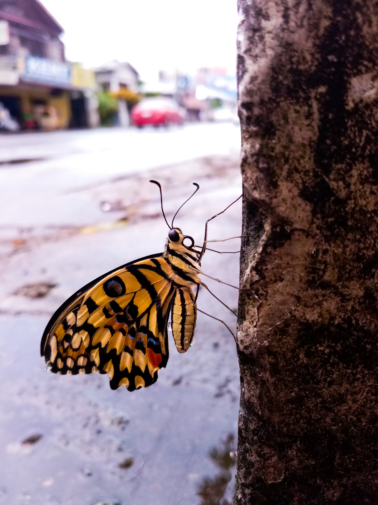
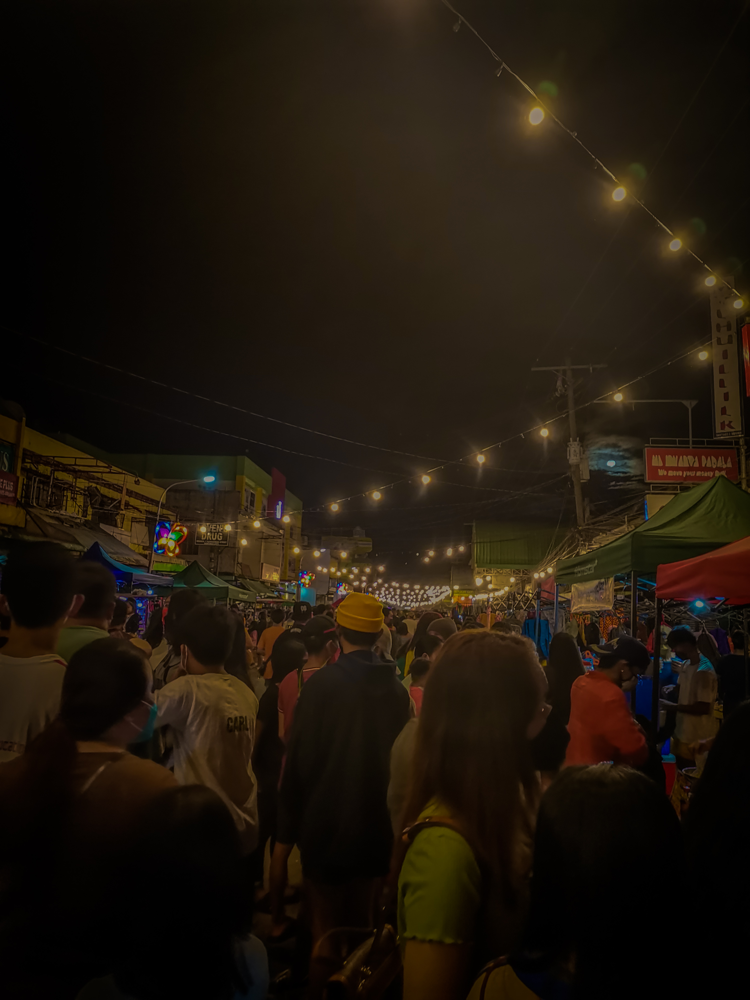
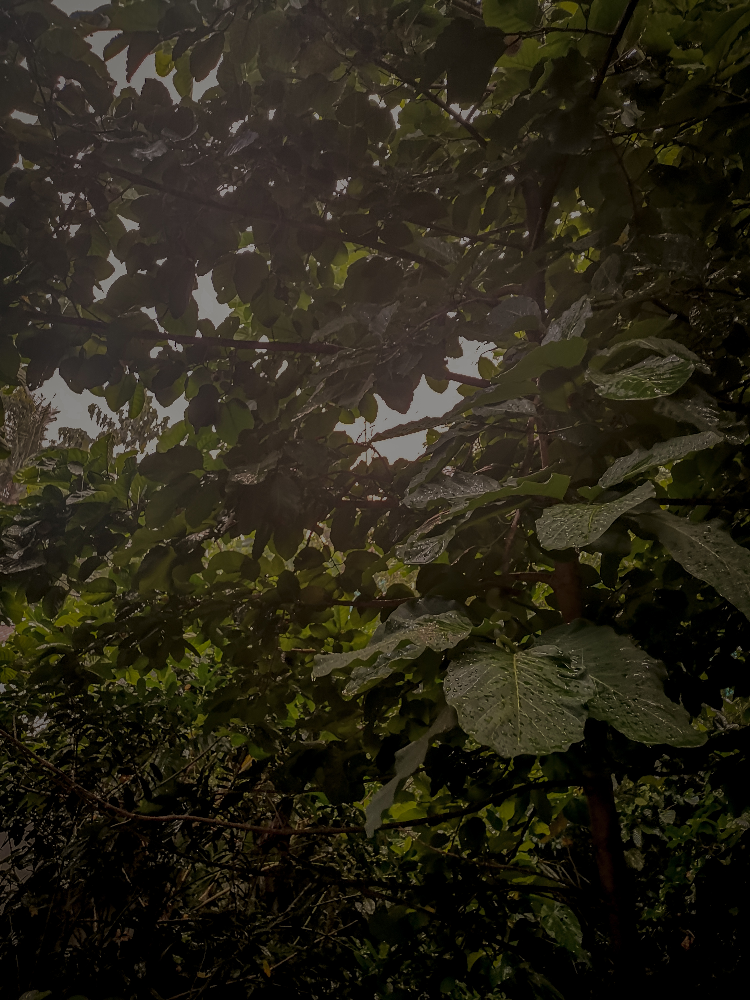

The Most Talented Man in The World.
is not Jan Daren C. Dasallas, however, he has certain skills, hobby, and interest that he is proud of. Maybe you have too.
SKILLS.

Growing up, I discovered certain strengths in my personality that I can consider as my skill.
The soft skills I have are creativity, hardworking, and attention to detail.
I consider myself a creative person. I like to think of imaginative ways and apply them to the things I make.
I am a hardworking person because I persevere and put effort into the things I love to do.
Also, I always focus on details so I can create and deliver my work to its best version.
Moreover, some of the hard skills I have are video editing, photo-color grading, and programming.
In high school, I studied video editing by watching youtube tutorials.
I got commissions and earned money back then from editing video projects of my schoolmates and doing coding assignments.
HOBBIES.

Listening to music is one of the hobbies I love to do.
It isolates me from the crowd, especially when my social battery runs out.
It also helps me to improve my emotions. When I'm happy I listen to music.
When I'm sad I listen to music. When I'm bored I listen to music.
I also like to watch movies and series in my leisure time.
I find them entertaining and relaxing. The genres I watch are sitcoms, science fiction, and documentaries.
In addition, I like to play video games. It distracts me but makes me stressed at the same time.
The most common games that I play are League of Legends and Valorant. I play them because they are free and most of my friends use it.
INTERESTS.
I am fond of video editing and programming.
The idea of creating something from raw material through editing, and connecting notions into a creative composition really pique my interest.
It's like a puzzle to me, figuring out how a concept works and applying it to the in-progress result.
I feel euphoric when I'm working on a project related to these aspects. I like to build something by applying the use of coding or video editing.
I am also interested in photography and color coding. It is amazing looking at peculiar photos.
I appreciate them especially nostalgic and nature photography. I study photography through youtube video tutorials, also on Instagram, and Twitter.
I take photos of my surroundings using my phone and color code them in the Adobe Lightroom mobile app.
SOME OF MY PHOTOGRAPHY WORKS.


